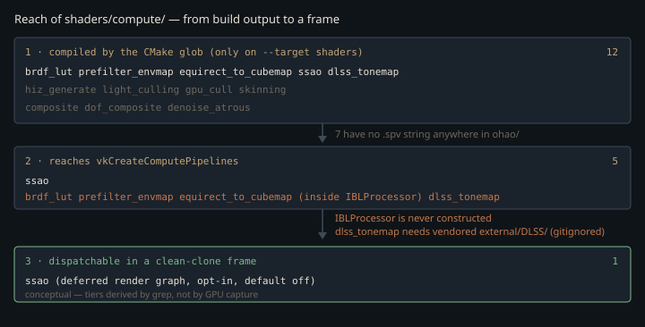

Monograph · Tree · ← Sitemap · Compute shaders
shaders
Compute shaders
BRDF LUT, env prefilter, HiZ, light cull, skinning, composite, DoF.
Twelve files, one that reaches a clean-clone frame
Nothing in the build depends on the shaders. `add_custom_target(shaders ...)` is declared without `ALL`, and no `add_dependencies` call anywhere in the tree names it, so a default `cmake --build build` compiles no SPIR-V at all — `--target shaders` is a second, manual step.
add_custom_target(shadersshaders/CMakeLists.txt:54When it does run it discovers work by file extension, not from a manifest, then flattens the path into one SPIR-V name — `compute/brdf_lut.comp` → `compute_brdf_lut.comp.spv`.
"${CMAKE_CURRENT_SOURCE_DIR}/*.comp"shaders/CMakeLists.txt:12So a green build proves nothing about wiring; it has not even touched a shader. Grepping the `.spv` names C++ actually opens gives the real map: of twelve files, five reach `vkCreateComputePipelines`. Three of those five belong to `IBLProcessor`, which nothing constructs; a fourth is compiled out unless a vendored NGX library is already on disk. That leaves one shader a fresh clone can dispatch — `ssao.comp`, itself default-off.

The IBL bake nobody constructs
Three files — equirect-to-cubemap, GGX prefilter, split-sum BRDF LUT — are the classic image-based-lighting bake, and they are wired: `IBLProcessor` builds a compute pipeline for each.
if (!createPipeline("shaders/compute_brdf_lut.comp.spv", m_brdfPipeline)) {ohao/render/ibl/ibl_processor.cpp:434Nothing constructs it. The type name never appears outside its own two files; its only other trace is an `#include` of its header in `ohao/render/render_module.hpp`, an aggregator nothing includes. `IBLProcessor`'s own defects have a separate unit; the consequence for these three `.comp` files is that they never execute, and deferred lighting gets a 1×1 `R8G8B8A8_UNORM` dummy where the baked LUT belongs — `setIBLTextures`, the only writer of `m_brdfLUTView`, has no caller either.
imageInfos[8].imageView = m_brdfLUTView != VK_NULL_HANDLE ? m_brdfLUTView : fallbackView;ohao/render/deferred/deferred_lighting_pass.cpp:353The fragment shader knows, and substitutes an analytic scale when the sampled pair sums to under `1e-4`.
if (brdf.x + brdf.y < 1e-4) {shaders/core/deferred_lighting.frag:295Whether that test fires is not something the C++ guarantees. The dummy is created with `VK_IMAGE_USAGE_SAMPLED_BIT` and nothing else — no transfer destination, no storage — so it cannot legally be written, and nothing writes it; only a layout transition touches it. Its texels are undefined by the Vulkan spec, not defined-zero.
imageInfo.usage = VK_IMAGE_USAGE_SAMPLED_BIT;ohao/render/deferred/deferred_lighting_pass.cpp:775Which branch runs therefore depends on what the driver leaves in a fresh allocation: zero — the ordinary case — makes `vec2(max(1 - roughness, 0.04), roughness * 0.25)` the live path for every environment reflection the rasteriser draws; anything else shades from garbage. Neither outcome involves a baked integral.
What the LUT would hold
Split-sum factors the specular IBL integral into a prefiltered radiance lookup times a two-term BRDF integral of view angle and roughness alone. Writing Schlick Fresnel as $F = F_0(1 - F_c) + F_c$ with $F_c = (1 - \mathbf{v}\!\cdot\!\mathbf{h})^5$ splits that second factor into a pair that no longer mentions $F_0$:
With $f_r$ the Cook-Torrance lobe, $f_r/F = DG\,/\,4(\mathbf{n}\!\cdot\!\mathbf{l})(\mathbf{n}\!\cdot\!\mathbf{v})$ still carries the GGX distribution $D$ and the Smith term $G$. `brdf_lut.comp` evaluates neither integral directly: it draws the half-vector $\mathbf{h}$ from the GGX NDF, so after the half-vector-to-light Jacobian $p(\mathbf{l}) = D(\mathbf{h})(\mathbf{n}\!\cdot\!\mathbf{h})\,/\,4(\mathbf{v}\!\cdot\!\mathbf{h})$, $D$ cancels and the per-sample weight has no NDF left in it:
float G_Vis = (G * VdotH) / (NdotH * NdotV);shaders/compute/brdf_lut.comp:91$A$ and $B$ are the sample means of $(1 - F_c)\cdot$`G_Vis` and $F_c\cdot$`G_Vis` over 1024 Hammersley points. That weight is an estimator tied to this sampling density, not an integrand — integrating it over the hemisphere does not give $A$. The image `IBLProcessor` allocates for the result is 512² `R16G16_SFLOAT`, one channel per integral.
const uint SAMPLE_COUNT = 1024u;shaders/compute/brdf_lut.comp:12static constexpr uint32_t BRDF_LUT_SIZE = 512;ohao/render/ibl/ibl_processor.hpp:45Shading is meant to reconstruct specular as $F_0 A + B$ with the *constant* $F_0$, precisely because $A$ and $B$ already carry all the angular Fresnel weighting. The deferred shader instead builds a roughness-biased Fresnel at the view angle —
vec3 F = fresnelSchlickRoughness(NdotV, surface.F0, roughness);shaders/core/deferred_lighting.frag:288— and feeds that `F`, not `F0`, into `prefilteredColor * (F * brdf.x + brdf.y)`, double-counting the Fresnel falloff. With the LUT reduced to the analytic substitute above it is moot today, and a live defect the day the bake is enabled.
The LUT's geometry term uses the image-based Smith-Schlick remap. The shader sets `a = roughness` and `k = (a * a) / 2`, i.e. $k = r^2/2$; since its own `importanceSampleGGX` defines $\alpha = r^2$, that is Karis's $k = \alpha/2$ IBL remap — not the $(r+1)^2/8$ direct-lighting remap the raygen shaders inline in their NEE branches. Crossing the two is a standard way to get a subtly wrong specular horizon.
float a = roughness;shaders/compute/brdf_lut.comp:50float k = (a * a) / 2.0;shaders/compute/brdf_lut.comp:51The workgroup size nobody checked
All three IBL shaders declare `local_size 16×16` while every dispatch in `IBLProcessor` computes groups as `(N + 7) / 8` — twice the groups per axis, four times the intended invocations. Only the `coord >= size` early-out at the top of each shader keeps the result correct, at four times the cost.
layout(local_size_x = 16, local_size_y = 16, local_size_z = 1) in;shaders/compute/prefilter_envmap.comp:6vkCmdDispatch(cmd, (mipSize + 7) / 8, (mipSize + 7) / 8, 6);ohao/render/ibl/ibl_processor.cpp:676Because the bake has no call site, none of this has ever been observed running.
SSAO: the one on the raster path
`compute_ssao.comp.spv` is loaded by `SSAOPass` and dispatched from the deferred render graph. Its `local_size 8×8` and `(N + 7) / 8` group count agree, unlike the IBL trio. It reads the GBuffer normal attachment — an octahedral pair in `.rg` of an `R16G16B16A16_SFLOAT` target — through `decodeNormalOctahedron` in `includes/common/encoding.glsl`, which opens by undoing a [0,1] remap:
vec2 f = encoded * 2.0 - 1.0;shaders/includes/common/encoding.glsl:16The matching `* 0.5 + 0.5` is not in that include: it is applied at the call site in `gbuffer.frag`, against an `encodeNormalOctahedron` that file redefines locally. The shared encoder of the same name returns [-1,1] — its doc comment claiming [0,1] is wrong — so the round trip survives only because `gbuffer.frag` does not use the include. "De-duplicating" it onto the shared helper breaks the pairing silently.
vec2 encodedNormal = encodeNormalOctahedron(N) * 0.5 + 0.5;shaders/core/gbuffer.frag:124It is off unless asked for:
bool m_ssaoEnabled{false};ohao/render/deferred/post_processing_pipeline.hpp:122Three call sites ask — the model viewer, the renderer pipeline test, and the Python bindings, which expose the setter by name.
pp->setSSAOEnabled(true);examples/model_viewer.cpp:324.def("set_ssao_enabled", &PostProcessingPipeline::setSSAOEnabled)tests/python/renderer_bindings.cpp:304The kernel is GTAO-shaped: eight slice directions — `m_sampleCount` defaults to 8 and nothing calls `setSampleCount` on this pass — each swept both ways for four steps, so 64 depth taps per pixel.
uint32_t m_sampleCount{8};ohao/render/deferred/ssao_pass.hpp:84int stepsPerDirection = 4;shaders/compute/ssao.comp:106Each slice closes with Jimenez's analytic arc integral, which gives the visible cosine-weighted solid angle between two horizons in closed form instead of counting occluded samples:
$h$ is a horizon angle, $n$ the angle of the projected normal, both measured inside the slice plane; the slice's occlusion is $a(h_1) + a(h_2)$.
float a = (-cos(2.0 * h1 - n) + cos(n) + 2.0 * h1 * sin(n)) / 4.0;shaders/compute/ssao.comp:36The derivation requires $h_1$, $h_2$ and $n$ to share a frame anchored on the view vector. This implementation does not: `n` is taken against `normalize(-viewPos)`, but the horizon search maxes its cosine against the in-plane sweep direction passed in as `viewDir`, and the back-sweep references the same `+dir` axis rather than its negation.
float h = dot(normalize(diff), viewDir);shaders/compute/ssao.comp:65What ships is a horizon-based heuristic with GTAO's closed form bolted on, not the ground-truth integral the file header claims. The `bias` push-constant field is declared and never read.
dlss_tonemap: display space, behind a build gate
The fifth pipeline is the DLSS Ray Reconstruction display pass, dispatched after RR writes its denoised HDR image:
m_dlssRR->tonemap(cmd, m_dlssColorOutView, m_outputView, m_width, m_height);ohao/render/rt/path_tracer_render.cpp:854That call site is inside `#ifdef OHAO_DLSS_ENABLED`, and so is the whole of `dlss_rr.cpp`, the only translation unit that names the `.spv`.
#endif // OHAO_DLSS_ENABLEDohao/render/rt/path_tracer_render.cpp:858#ifdef OHAO_DLSS_ENABLEDohao/render/rt/denoise/dlss_rr.cpp:5The option defaults ON only when a vendored NGX static library is already on disk, and `.gitignore` excludes the directory that would hold it — so a clean clone compiles the file empty. The `.spv` is still produced by the glob; nothing loads it.
set(OHAO_DLSS_STATIC_LIB "${CMAKE_SOURCE_DIR}/external/DLSS/lib/Linux_x86_64/libnvsdk_ngx.a")CMakeLists.txt:58external/DLSS/.gitignore:87Where it does run, it takes `RGBA16F` linear to `RGBA8` with the same ACES curve and the same 0.5 exposure prescale as `pt_raygen.rgen`, so switching denoisers does not shift the tone curve underneath a comparison.
vec3 ldr = ACES(hdr * 0.5);shaders/compute/dlss_tonemap.comp:52Everything after the curve — contrast, split-tone, saturation, vignette, grain — is scaled by one push-constant master read from `OHAO_GRADE`, where 0.0 reproduces the pre-cinematic output exactly. Chromatic aberration is the exception: it runs *before* ACES, offsetting the R and B `imageLoad`s, so it resamples HDR radiance rather than the graded image. Its offset is also truncated to whole texels, so it snaps where the expression crosses one pixel rather than ramping.
ivec2 off = ivec2(d * s * r2 * 6.0);shaders/compute/dlss_tonemap.comp:44None of it feeds back into the trace — the pass reads DLSS's `COLOR_OUT` and writes the RGBA8 beauty — so the tracer stays unbiased.
The seven with no caller
None of `hiz_generate`, `light_culling`, `gpu_cull`, `skinning`, `composite`, `dof_composite`, `denoise_atrous` appears as a `.spv` string anywhere in `ohao/`. For most, the job did not disappear — it landed elsewhere:
- The frustum test in `gpu_cull.comp` ships in C++: the GBuffer pass builds a
`Frustum` and rejects per-object world AABBs on the CPU.
if (!frustum.isAABBVisible(worldAABB)) {ohao/render/deferred/gbuffer_pass.cpp:230- `hiz_generate.comp`'s only developed consumer is `shaders/_disabled/ssr.comp`,
which binds a `hizBuffer` sampler and ray-marches it with mip descent.
float sampleHiZ(vec2 uv, int mipLevel) {shaders/_disabled/ssr.comp:45`gpu_cull.comp`'s Hi-Z "branch" is three commented-out lines calling an `isOccluded()` the file never defines, and it binds no Hi-Z texture at all.
// visible = !isOccluded(worldCenter, worldRadius);shaders/compute/gpu_cull.comp:140- `light_culling.comp` budgets 256 lights and 64 per 16×16 tile. The deferred
lighting shader it would feed caps at eight lights, where a tile list costs more than the loop it removes.
#define MAX_LIGHTS 8 // Must match C++ MAX_LIGHTS in offscreen_renderer.hppshaders/core/deferred_lighting.frag:29- The edge-aware wavelet that ships is the SVGF pair under `shaders/rt/`, loaded by
`AtrousDenoiser` — not `denoise_atrous.comp`.
if (!I.createComputePipeline("rt_rt_svgf_atrous.comp.spv", I.atrousPipelineLayout, I.atrousPipeline))ohao/render/rt/denoise/atrous_denoise.cpp:277- `composite.comp` merges SSR reflections and volumetric fog into an HDR scene
buffer. The RT stack's `rt/cinematic_composite.comp` is a different job, not a newer version of it: NRD's composed HDR plus a three-level bloom mip chain plus a sky composite, AgX-tonemapped.
// Merges SSR reflections and volumetric fog into the HDR scene buffer.shaders/compute/composite.comp:4- `dof_composite.comp` and `rt/cinematic_dof.comp` are both depth of field, but the
first is a CoC-buffer-driven HDR bokeh and the second a poisson gather over post-tonemap RGBA8.
// Input: binding 0 = final LDR (post-tonemap) RGBA8shaders/rt/cinematic_dof.comp:11Why skinning.comp is the dangerous one
`skinning.comp` is different in kind. Its stated consumer — a per-frame BLAS rebuild for skinned meshes — no longer exists: `ohao/animation/` and the skinned vertex shaders were removed, and no first-party source under `ohao/`, `examples/` or `tests/` contains the string `skinned` in any case. Only a buffer usage flag survives, still commented "for compute skinning".
VK_BUFFER_USAGE_STORAGE_BUFFER_BIT | // for compute skinningohao/gpu/vulkan/rt_build.cpp:42The shader has also gone stale against the struct it reads. It hardcodes float offsets into the vertex stream, putting bone indices at floats 15–18:
floatBitsToInt(inVerts[base + 15]),shaders/compute/skinning.comp:59The current `Vertex` is position(3), color(3), normal(3), texCoord(2), texCoord1(2), tangent(4), boneIndices(4), boneWeights(4) — 25 floats, so indices begin at float 17 and weights at 21. The second UV set arrived after the shader was written:
glm::vec2 texCoord1{0.0f, 0.0f}; // Second UV set (GLTF texCoord: 1)ohao/scene/asset/model.hpp:23Both reads are two floats early. The index read at 15 takes `tangent.zw` and then `boneIndices.xy`; the weight read at 19 takes `boneIndices.zw` — two `int` bit patterns reinterpreted as floats — and then `boneWeights.xy`. The shader's own comments disagree with each other on the stride as well: 28 floats / 112 bytes in one, 23 floats / 92 bytes in another, and neither matches the struct's 25 floats / 100 bytes.
A dead shader is not inert. It keeps compiling — when someone remembers to run the shader target — so it looks maintained, while the structs and descriptor layouts it encodes drift underneath it. `skinning.comp` would silently skin garbage if re-enabled today, and nothing in the build would say so.
Contracts
- Nothing depends on the `shaders` target, so `cmake --build build` never recompiles SPIR-V and a stale `.spv` loads without complaint. `--target shaders` is a separate step. Compilation is then by glob, so adding a `.comp` yields a `.spv` and no wiring: a loader must ask for the path-flattened name, `compute/<name>.comp` → `compute_<name>.comp.spv`.
- Nothing constructs `IBLProcessor` and nothing calls `setIBLTextures`, so `deferred_lighting.frag` samples an uninitialised 1×1 image for the LUT on every deferred frame. Delete the `brdf.x + brdf.y < 1e-4` substitution and rough metals lose the `prefilteredColor * (F * brdf.x + brdf.y)` term but keep the unconditional `metallic > 0.5` environment floor ten lines below — dimmer, not black. {{cite shaders/core/deferred_lighting.frag "specularAmbient += surface.F0 * max(prefilteredColor"}}
- `compute_dlss_tonemap.comp.spv` is named only from inside `#ifdef OHAO_DLSS_ENABLED`. Without `external/DLSS/` at configure time the pipeline is never created, so any claim that two compute shaders reach a frame is a claim about a machine with the NGX SDK vendored in.
- `skinning.comp`'s float offsets and pushed stride must be re-derived from `ohao/scene/asset/model.hpp` before any use. Both reads are two floats stale.
Source files
shaders/CMakeLists.txtohao/render/ibl/ibl_processor.cppohao/render/deferred/deferred_lighting_pass.cppshaders/core/deferred_lighting.fragshaders/compute/brdf_lut.compohao/render/ibl/ibl_processor.hppshaders/compute/prefilter_envmap.compshaders/includes/common/encoding.glslshaders/core/gbuffer.fragohao/render/deferred/post_processing_pipeline.hppexamples/model_viewer.cpptests/python/renderer_bindings.cppohao/render/deferred/ssao_pass.hppshaders/compute/ssao.compohao/render/rt/path_tracer_render.cppohao/render/rt/denoise/dlss_rr.cppCMakeLists.txt.gitignoreshaders/compute/dlss_tonemap.compohao/render/deferred/gbuffer_pass.cppshaders/_disabled/ssr.compshaders/compute/gpu_cull.compohao/render/rt/denoise/atrous_denoise.cppshaders/compute/composite.compshaders/rt/cinematic_dof.compohao/gpu/vulkan/rt_build.cppshaders/compute/skinning.compohao/scene/asset/model.hppshaders/compute/equirect_to_cubemap.compshaders/compute/hiz_generate.compshaders/compute/light_culling.compshaders/compute/dof_composite.compshaders/compute/denoise_atrous.compParent hub for the full pipeline narrative; this page is the file-level design unit. Sitemap · hover glossary terms anywhere.